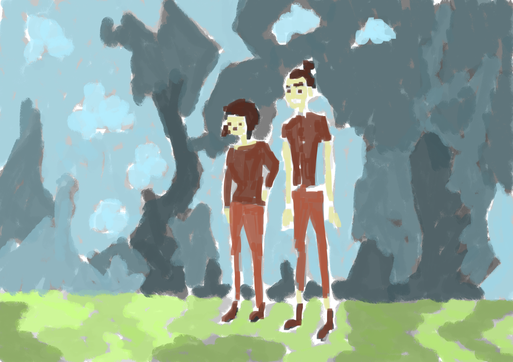

Artist William McKee discusses Creative Commons, open source and open education
William Mckee is an artist from Hamilton, New Zealand. His art can be found at artcontrol.me and is available under a Creative Commons Attribution (BY) licence. William is also a supporter and user of open source software, and is passionate about early childhood education.
“I use Creative Commons as an artist in the hope that it helps promote my artwork, and to make the world a better place,” says William. “Others may find uses for my art and even make money from it, good on them!”
 "The Milk Collective - Colour" by Wiliam McKee, via artcontrol.me. Licensed CC-BY
"The Milk Collective - Colour" by Wiliam McKee, via artcontrol.me. Licensed CC-BY
William seriously became interested in drawing after leaving high school and attending UCOL in Palmerston North. There he had a drawing tutor, Mark, who inspired him to keep a drawing journal. William gained the habit of carrying a sketchbook wherever he goes, along with a pencil or pen.
During his time at Palmerston North School of Design, William created the site artcontrol.me: The Art Of William Mckee. It was hosted with GoDaddy and ran CentOS. The site was powered by WordPress, switching later to Nikola. He later also switched this to DigitalOcean with the operating system Debian, which is used by the majority of his machines.
While William was always interested in using a Creative Commons licence, he at first chose to use a more restrictive Attribution-NonCommercial (BY-NC) licence for his artworks, though soon chose to use the liberal Attribution (BY) licence. William doesn’t see many reasons for artists to use NC licences, and finds it especially problematic when NC licensing is used by governments.
As William argues, “Tax payers have already paid for the material. It should therefore be licensed under the most liberal licences (perhaps even public domain/creativecommons zero). This allows the most freedom for people to do what they like with the content.”
William also point out that the “Non-Commercial licences are hard to interpret, as was noted in a German court case in 2014, which strongly limited the interpretation of NC to ‘personal use.’ Similar problems with the interpretation of NC could exist in other countries. This is why I think government - and everyone, in fact - should avoid the NC licence. I would actually prefer that the NC licence not exist in the first place.”
The good thing, Williams says, is that the majority of New Zealand government works released under CC seems to be under CC BY, though he is concerned that some schools seem to have adopted an NC licence.
William has also adapted the work of another Creative Commons licensed artist, Jem Yoshioka, which is featured below.
 "Jem-colour" by William McKee, via artcontrol.me. Licensed CC-BY.
{kind=link}
In 2010 he moved to Wellington and attended The Learning Connexion, where he began to focus on life drawing, using GIMP, an open source drawing and design tool. William began by painting on a windows desktop and laptop, later switching to Fedora and Debian. Many of his works from 2012-2014 of portrait and figures were drawn from references on RedditGetsDrawn. During this period, William would draw portraits of people and give them the drawing - taking a photo for his own reference. At the bottom of the page he would sign with wcmckee artcontrol.me and write ‘cc by’ on the piece of original artwork. These were mostly completely in pencil and coloured pencil.
William is also passionate about working with children. In 2014 he volunteered at Whaihanga Early Learning Centre, where he would work collaboratively with kids, often on the same piece of art, using oil pastel, pencil, and coloured pencil. He was very influenced by the children's drawings - often redrawing elements of their works.
William took the liberty of licensing these works under a CC BY licence - photographing and uploaded the works to artcontrol.me. He would create large chalk murals on the ground outside, with children requested that he draw comic book characters like the Hulk, Spiderman, Bane, and Batman. These mural pieces were created on the fenceline of Whaihanga and Knighten Normal School. Swarms of school children would crowd the fenceline - watching and discussing the artwork with him. They were often blown away from how quickly he worked.
“A hope of mine,” William says, “was the children would learn that art was about sharing and remixing - something Creative Commons has at its core.”
William has since become a volunteer for Creative Commons Aotearoa New Zealand, helping to spread the word about Creative Commons licensing in the Hamilton region. If you want to volunteer, get in touch!